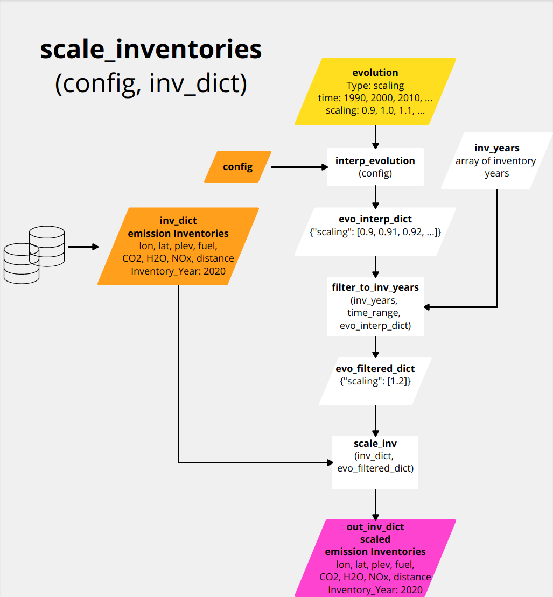

Time Evolution
In OpenAirClim, there exist three types of possible predefined time evolutions:
Normalization by given time evolution file via fuel use and emission indices.
Scaling by given time evolution file, scaling/multiplication of all data variables.
No evolution file given, temporal interpolation between discrete inventory years.
The preferred way is applying any evolution type already on the inventory data itself, i.e. before calculating the responses. Alternatively, time evolution routines can be applied after calculating the responses only. However, this is solely recommended for linear responses. In the following section, the application of time evolution on inventory data is described.
Note
TL;DR using an example: If you need the global fuel use in the year 2000 to be 125 Tg but your emission inventory in the year 2000 only has 100 Tg, then you have two options. You could normalise to 125 Tg or scale by 1.25. Both methods are valid and produce the same result! Which to choose just depends on how you want to work.
Adjust inventories
Depending on the user settings in the configuration file, the function adjust_inventories(config, inv_dict) applies one of the possible evolution types on the inventories. The corresponding settings have to be made within the section (respectively hash table) [time] in the configuration file.
Normalization
If a valid time evolution file is set in the configuration, OpenAirClim reads in the netCDF file and checks the global attribute section (metadata). If the key-value pair Type: norm is found in the global attributes, the function norm_inventories(config, inv_dict) is executed.
The general idea behind the normalization routine is that the driving parameters (fuel use, emission indices and flown distance per fuel use) come from the evolution file. The emission inventories are normalized accordingly.

The figure above illustrates the workflow of the normalization routine. First, the evolution data gets processed. The data comprises fuel uses and optionally emission indices for the emitted species and flown distance per fuel use. The evolution data variables are interpolated via function interp_evolution(config) to the time range defined in the configuration. This is necessary since the time steps for time range and for evolution data can be different.
Then, the function calc_inv_quantities(config, inv_dict) is applied on the dictionary of input inventories inv_dict. It outputs the inventory years, the inventory species sums and emission indicies. For further processing, only the emission indices are used which are also available in the evolution data. Therefore, the function filter_dict_to_evo_keys(config, ei_inv_dict) filters the emission indices dictionary which have been computed from the inventories.
Since we are interested in adjusting inventories, evolution data is only needed for inventory years. This is done by function filter_to_inv_years(inv_years, time_range, evo_interp_dict) (left vertical workflow in the figure).
The filtered fuel use and emission indices from the evolution data together with the computed fuel sums and emission indices from the inventories (right vertical workflow in the figure) are processed within function calc_norm(evo_filtered_dict, ei_inv_dict) for calculation of normalization multipliers. Finally, function norm_inv(inv_dict, norm_dict) applies these multipliers on the inventory data variables (fuel use, species emissions and distance) in order to create normalized emission inventories out_inv_dict.
Scaling
If a valid time evolution file is set in the configuration, OpenAirClim reads in the netCDF file and checks the global attribute section (metadata). If the key-value pair Type: scaling is found in the global attributes, the function scale_inventories(config, inv_dict) is executed.
The general idea behind the scaling routine is that the parameters in the evolution file are multipliers. The emission inventories are scaled accordingly. This routine is useful for the consideration of changes relative to the emission inventories.

The figure above illustrates the workflow for the scaling routine. First, the evolution data gets processed. In the case of a evolution file of type scaling, evolution data comprises a time series of scaling factors. In the current implementation, the scaling factors apply equally to all inventory data variables (fuel use, species emissions and flown distance).
The evolution data variables are interpolated via function interp_evolution(config) to the time range defined in the configuration. This is necessary since the time steps for time range and for evolution data can be different.
Since we are interested in adjusting inventories, evolution data is only needed for inventory years. This is done by function filter_to_inv_years(inv_years, time_range, evo_interp_dict). Finally, function scale_inv(inv_dict, evo_filtered_dict) performs the actual scaling by multiplying inventory data variables by the scaling factors.
No evolution
If no evolution file is set in the configuration, no evolution is applied, i.e. the inventory output dictionary out_inv_dict and the input dictionary inv_dict are the same.
Apply evolution on computed values
After having computed the responses, time evolution is considered by the apply_evolution(config, val_dict, inv_dict, inventories_adjusted) function. This is necessary since the responses are only computed for inventory years and we need to evaluate the responses for the interjacent years from the accoording evolution. The bool variable inventories_adjusted takes into account if the adjust_inventories(config, inv_dict) function has been applied on the input inventories or not. Similarly to the inventory adjustment routine, apply_evolution(config, val_dict, inv_dict, inventories_adjusted) applies one of the three possible evolution types on a dictionary val_dict of computed values.
Normalization
If a valid time evolution file is set in the configuration, OpenAirClim reads in the netCDF file and checks the global attribute section (metadata). If the key-value pair Type: norm is found in the global attributes, the function apply_norm(config, val_dict, inv_dict) is executed.
For this normalization routine, it is irrelevant if the inventories have been adjusted beforehand by adjust_inventories(config, inv_dict).

The figure above illustrates the workflow for the normalization routine. Basically, the computed values in val_dict are linearly interpolated over time_range and multiplied by normalization factors. The normalization factors are derived as follows.
First, the evolution data gets processed (right vertical workflow in the figure). The data comprises fuel uses and optionally emission indices for the emitted species and flown distance per fuel use. The evolution data variables are interpolated via function interp_evolution(config) to the time range defined in the configuration. This is necessary since the time steps for time range and for evolution data can be different.
Then, the function calc_inv_quantities(config, inv_dict) is applied on the dictionary of input inventories inv_dict. It outputs the inventory years, the inventory species sums and emission indicies. For further processing, only the emission indices are used which are also available in the evolution data. Therefore, the function filter_dict_to_evo_keys(config, ei_inv_dict) filters the emission indices dictionary which have been computed from the inventories.
Afterwards, the emission indices derived from the inventories are interpolated over time_range.
The interpolated evolution data together with interpolated emission indices from the inventories are processed by function calc_norm(evo_interp_dict, ei_inv_interp_dict). It calculates the normalization multipliers which are finally applied to the computed and interpolated responses.
Scaling
If a valid time evolution file is set in the configuration, OpenAirClim reads in the netCDF file and checks the global attribute section (metadata). If the key-value pair Type: scaling is found in the global attributes, the function apply_scaling(config, val_dict, inv_dict, inventories_adjusted) is executed.
For this scaling routine, it is critical if the inventories have been adjusted beforehand or not. Therefore, the bool variable inventories_adjusted is passed to the function. By default, this variable is set to False.

The figure above illustrates the workflow for the scaling routine. Basically, the computed values are interpolated over time_range and multiplied by scaling factors. If inventories_adjusted = False, the scaling factors correspond to the factors given in the evolution file and interpolated over time_range. If inventories_adjusted = True, the scaling factors from evolution are normalized. The normalized scaling factors are unity for inventory years, and for interjacent years the factors may differ from unity.
No evolution
If no evolution file is set in the configuration, apply_no_evolution(config, val_dict, inv_dict) is executed. This corresponds to a simple (linear) interpolation of computed values over time_range. If the defined time range has intervals outside the inv_years range, OpenAirClim assumes fill values of 0.0, i.e. no emissions are considered for these periods! A warning is output to ensure that this setting is made intentionally by the user.
Time constraints
There exist several requirements on the time settings which must be met so that the configuration is considered as valid. These requirements are different for the three evolution types.
Normalization
Following figure illustrates the time constraints for the evolution type norm. Three different time axes have to be considered: time_range from the settings in the configuration file, the discrete inventory years inv_years from the emission inventories, and the time coordinate evolution_time from the evolution file.

Following time constraints have to be met for a valid configuration:
time_rangemust be withinevolution_timeAt least one
inv_yearmust be withintime_rangeAt least one
inv_yearmust be withinevolution_time
Following inventories are considered during simulation:
inv_yearsoverlapping withtime_range
Scaling
Following figure illustrates the time constraints for the evolution type scaling. Three different time axes have to be considered: time_range from the settings in the configuration file, the discrete inventory years inv_years from the emission inventories, and the time coordinate evolution_time from the evolution file.

Following time constraints have to be met for a valid configuration:
time_rangemust be withinevolution_timeAt least one
inv_yearmust be withintime_rangeAt least one
inv_yearmust be withinevolution_timetime_rangefirst and last year must be inventory years
Following inventories are considered during simulation:
inv_yearsoverlapping withtime_range
No evolution
Following figure illustrates the time constraints for the evolution type no evolution. Two different time axes have to be considered: time_range from the settings in the configuration file, and the discrete inventory years inv_years from the emission inventories.

Following time constraints have to be met for a valid configuration:
At least one
inv_yearmust be withintime_range
Following inventories are considered during simulation:
inv_yearsoverlapping withtime_range